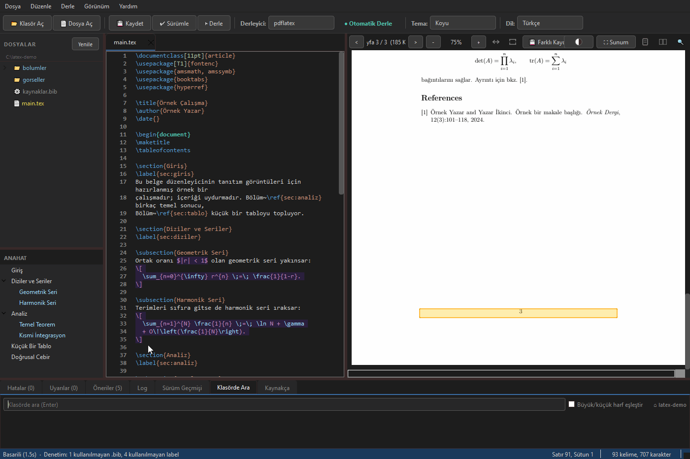
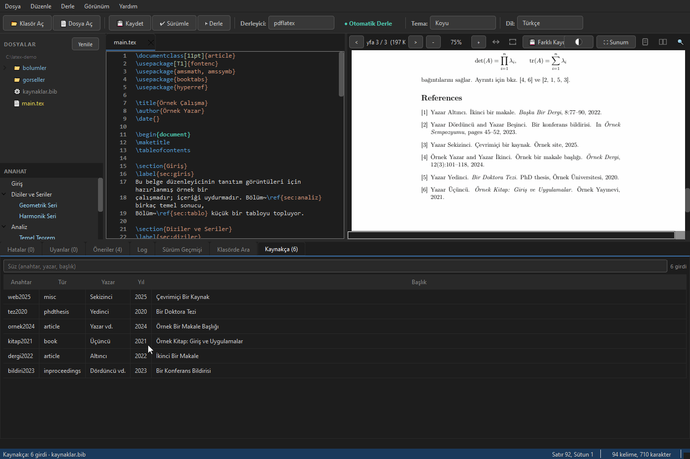
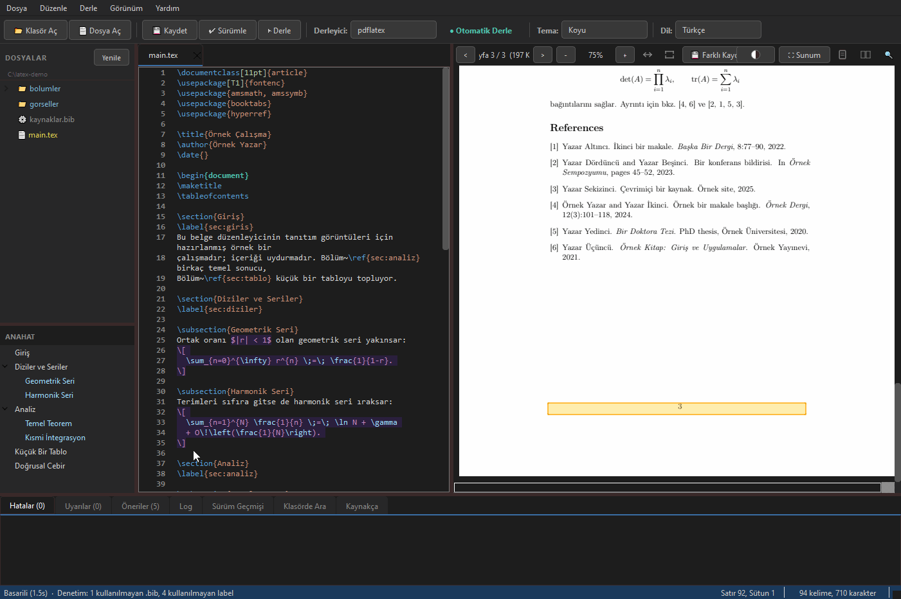

Türkçe karakter dostu
IEEE/ASYU tarzı şablonlarda derlemeyi bozan ş, ğ, ı kodlama sorununu çözer.
Düzenle, derle ve önizle; tek masaüstü uygulamasında SyncTeX, offline kullanım ve Türkçe karakter desteği yerleşik.


Editörde bir satıra tıkla, PDF o konuma (sayfalar arası bile) zıplasın. PDF'e tıkla, editör tam o kaynak satıra geri dönsün. Overleaf'teki o sevdiğin özellik; ama offline ve masaüstünde.

Ctrl+Shift+F proje klasöründeki tüm kaynak dosyaların içinde arar, hiç açmadıklarınız dahil. Sonuçlar dosya ve satır olarak listelenir, tıklayınca oraya gidilir.

.bib dosyanız sıralanabilir bir tabloya dökülür: anahtar, tür, yazar, yıl, başlık. Yazdıkça süzülür. DOI yapıştırınca kayıt çekilir, onayınıza sunulur ve dosyaya eklenir.

Otomatik derleme açıkken kaydetmek belgeyi yeniden derler ve önizlemeyi kendiliğinden tazeler. PDF ayrıca imlecinizin olduğu yere kayar, yazdığınız paragrafın üstüne düşersiniz.

Akademik makale, tez ve teknik rapor yazımında dünya standardı olan LaTeX, güçlü ve profesyonel çıktılar sunuyor. Ancak bu alandaki yaygın araçların büyük bir bölümü çevrim içi ve bulut tabanlı çalışıyor; bu durum, sürekli internet bağlantısı gerektirmesi, gizlilik taşıyan çalışmaların yine sunucularda tutulması ve abonelik ya da kayıt modellerine bağımlılık gibi konularda akademisyen ve öğrenciler için kısıtlamalar doğuruyor.
Tamamen açık kaynaklı ve bağımsız bir masaüstü uygulaması olan LaTeX Editor, belgelerin yazılmasını, derlenmesini ve PDF olarak önizlenmesini internet bağlantısı olmadan, kullanıcının kendi bilgisayarında gerçekleştiriyor. Yazılımda herhangi bir bulut hizmetine, kullanıcı hesabına veya çevrim içi oturuma ihtiyaç yok; kurulduktan sonra tamamen çevrim dışı çalışıyor. Bu yönüyle internet erişiminin kısıtlı olduğu alanlarda ve veri gizliliğinin önemli olduğu çalışmalarda özgür bir alternatif sunuyor.
IEEE/ASYU tarzı şablonlarda derlemeyi bozan ş, ğ, ı kodlama sorununu çözer.
Overleaf'ten indirilen projeleri otomatik düzeltir; yerelde derlenir.
Kaynak satıra Ctrl-tıkla → PDF'e geç. PDF'e Ctrl-tıkla → geri dön. Sayfalar arası bile.
Tarayıcı sekmesi değil, masaüstü uygulaması. İnternetsiz çalışır; Overleaf derleme limiti yok.
Komutlar, yorumlar, matematik, ortamlar.
Yan panelde PDF; kaydet, derle.
Ctrl+S kaydeder ve derler.
lualatex (öntanımlı), pdflatex ve xelatex; otomatik algılanır.
Klasör aç, dosya ağacı, çoklu sekme.
Ağaçta sağ tık: yeni dosya, yeni klasör, yeniden adlandır, sil. Açık bir dosyayı yeniden adlandırınca sekme de taşınır. Şekil PDF'leri ağaçta görünür, derleme çıktısı gizli kalır.
Yan panelde bölüm ağacı; başlığa tıkla, oraya atla.
Ctrl+F ve Ctrl+H; büyük/küçük harf eşleştir, tam kelime ve düzenli ifade seçenekleriyle. Ctrl+P ile projedeki dosyayı adıyla aç.
Ctrl+Shift+F klasördeki tüm .tex/.bib/.cls/.sty dosyalarının içinde arar; açmadıklarınız dahil. Sonuca tıklayınca o satıra gidilir.
Hatalar ve uyarılar ayrı sekmelerde.
Derleme eksik bir .sty ya da font yüzünden düşerse uygulama kurulacak paketi adıyla söyler ve komutu verir.
Tek ekranda WSL, TeX motorları, biber, pandoc ve synctex hazır mı gösterir; eksik olana kurulum komutu önerir.
Koyu, Açık, Solarized, Dracula, Monokai, Nord, Gruvbox.
Türkçe ve İngilizce arayüz.
Bölüm/başlık yapısı yan panelde.
Ctrl+F metin arama, vurgulu.
Sürükle-seç, Ctrl+C ile kopyala.
Yan yana sayfalar.
Ctrl+Space ile komut, \ref/\cite anahtarı ve \input / \includegraphics yollarını tamamlar.
Otomatik girinti ve \begin/\end hizalama.
Durum çubuğunda canlı kelime/karakter sayısı.
Ctrl+V ile panodaki resmi media/'a figure olarak yapıştırır.
Derleme hataları gutter'da işaretlenir; F4 ile dolaşılır.
Bir \ref veya \cite'e Alt-tıkla; labelına veya kaynakça girdisine atla.
\label ya da \cite anahtarı üzerinde F2: projedeki tüm dosyalarda, kullanıldığı her yerde değişir.
Tanımsız \ref/\cite, kullanılmayan .bib girdisi ve label'ları, mükerrer .bib anahtarını ve eksik zorunlu alanı bulur; bulguya tıkla, yerine atla. İsteğe bağlı olarak her derlemeden sonra da çalışır.
.bib girdileri sıralanabilir sütunlarda: anahtar, tür, yazar, yıl, başlık. Süz, satıra tıkla, dosyadaki yerine git. Elle yazılmış kaynakçalar (\bibitem) da listelenir.
DOI yapıştır, girdi getirilip .bib dosyasına eklensin. Ay makrosu, sayfa aralığı ve anahtar çakışması yolda düzeltilir; yazılmadan önce girdiyi görürsün.
PDF içinde \cite/\ref linklerine tıkla; hedefe atla.
F5 ile PDF'i sunum için tam ekran aç.
Önizleme renklerini ters çevir; gece koyu temayla PDF de uyumlu olsun.
Pandoc ile DOCX, Markdown veya düz metne çevir.
Dosyadaki dış değişiklikleri algılar, güvenle yeniden yükler.
Ctrl+K ile adlandırılmış sürüm kaydet; farkları gör, dosyayı geri yükle, eski içeriği kopyala. Git bilgisi gerekmez.
Kaydedilmemiş değişiklikler 30 saniyede bir yedeklenir. Uygulama öldürülür ya da elektrik giderse bir sonraki açılışta geri yüklemen önerilir.
Ctrl+T ile hücre grid'inden, CSV'den veya yapıştırılan koddan tablo üret; mevcut tabloları hizalar.
Yaygın LaTeX hatalarına sade dilde açıklama ve çözüm eklenir.
% !TEX root ile herhangi bir bölüm dosyasından kök belge derlenir.
Gözüne uygun paleti seç.
Taşınabilir .exe. Derleme için WSL + TeX Live gerekir.
.AppImage. Derleme için TeX Live gerekir.
⚠ İndirme yalnızca arayüzü içerir. LaTeX derleyicisi (lualatex/pdflatex/xelatex) TeX Live ile ayrıca kurulur.
İndirme yalnızca arayüzü içerir: LaTeX derlemesi için TeX Live gerekir. Tek seferlik kurulum:
wsl --installwsl yazarak da girebilirsin). İlk açılışta bir Linux kullanıcı adı/parolası belirle. Sonra paket listesini yenile ve TeX Live'ı kur (büyük indirme, birkaç GB):
sudo apt-get update
sudo apt-get install texlive-base texlive-binaries texlive-latex-base \
texlive-latex-extra texlive-latex-recommended texlive-lang-european texlive-luatex texlive-xetex \
texlive-fonts-extra texlive-science texlive-bibtex-extra texlive-font-utils \
texlive-extra-utils biber texlive-publishers texlive-humanities texlive-pstricks python3-pygments pandocsudo apt-get update
sudo apt-get install texlive-base texlive-binaries texlive-latex-base \
texlive-latex-extra texlive-latex-recommended texlive-lang-european texlive-luatex texlive-xetex \
texlive-fonts-extra texlive-science texlive-bibtex-extra texlive-font-utils \
texlive-extra-utils biber texlive-publishers texlive-humanities texlive-pstricks python3-pygments pandocchmod +x LaTeX_Editor_v*_Linux_x86_64.AppImageSonra uygulamayı aç, .tex dosyanın bulunduğu klasörü aç ve derlemek için Ctrl+S'e bas.
Arayüz yerel; ama LaTeX derlemesi Windows ve Linux'ta tutarlı bir toolchain için WSL içindeki TeX Live üzerinden çalışır.
Evet, Overleaf'te yazın (iş birliği), sonra indirip yerelde derleyin. Editör Overleaf'ten indirilen dosyaları otomatik düzeltir.
Sadece isteğe bağlı güncelleme kontrolü internete bağlanır. Düzenleme ve derleme tamamen offline.
Daha hafif; yerleşik SyncTeX, IEEE/ASYU şablonları için Türkçe karakter desteği ve Overleaf-içe-aktarma düzeltmesi ile. Ayrıca sizi toolchain çukurundan uzak tutmaya çalışır: düşen bir derleme hangi paketi kuracağınızı söyler, ortam denetimi makinenizde neyin eksik olduğunu kurulum komutuyla birlikte raporlar. GPL-3.0 altında açık kaynak.